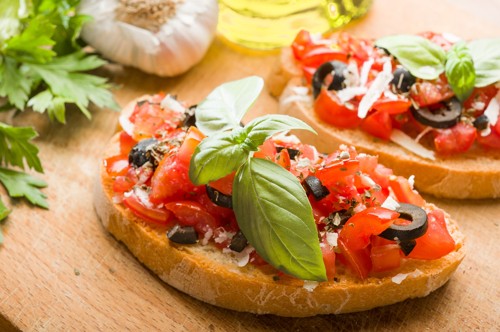
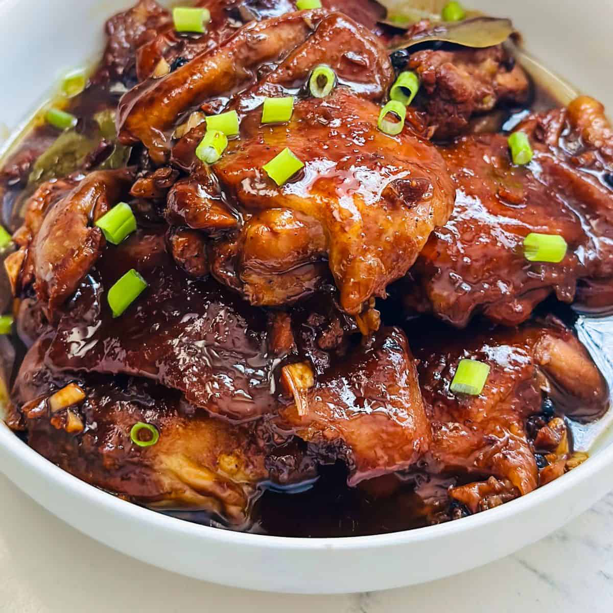

📌 Recipe |
🍲 Ingredients |
📖 Procedure |
📸 Image |
🥖 Appetizer: Classic Bruschetta |
- 1 baguette, sliced
- 2 large tomatoes, diced
- 2 cloves garlic, minced
- 2 tbsp olive oil
- 1/4 cup fresh basil, chopped
- 1 tsp balsamic vinegar
- Salt and pepper to taste
|
- Preheat oven to 375°F (190°C).
- Toast baguette slices until golden brown.
- In a bowl, mix tomatoes, garlic, basil, olive oil, balsamic vinegar, salt, and pepper.
- Top toasted baguette slices with the tomato mixture.
- Serve immediately and enjoy!
|
 |
🍗 Main Course: Chicken Adobo |
- 2 lbs chicken, cut into pieces
- 1/2 cup soy sauce
- 1/2 cup vinegar
- 4 cloves garlic, minced
- 1 onion, sliced
- 1 tsp black peppercorns
- 3 bay leaves
- 1 tbsp sugar
- 1 cup water
- 2 tbsp cooking oil
|
- In a bowl, marinate chicken with soy sauce, vinegar, garlic, and peppercorns for 30 minutes.
- Heat oil in a pan and sauté onions until translucent.
- Add marinated chicken (reserve marinade) and brown on all sides.
- Pour in reserved marinade, water, bay leaves, and sugar. Bring to a boil.
- Reduce heat and let simmer for 30 minutes until chicken is tender.
- Serve with steamed rice and enjoy!
|
 |
🍰 Dessert: Classic Chocolate Cake |
- 1 3/4 cups all-purpose flour
- 2 cups sugar
- 3/4 cup cocoa powder
- 2 tsp baking soda
- 1 tsp baking powder
- 1 tsp salt
- 1 cup buttermilk
- 1/2 cup vegetable oil
- 2 eggs
- 2 tsp vanilla extract
- 1 cup hot water
|
- Preheat oven to 350°F (175°C). Grease and flour two 9-inch cake pans.
- In a large bowl, whisk together flour, sugar, cocoa, baking soda, baking powder, and salt.
- Add buttermilk, oil, eggs, and vanilla. Mix well.
- Stir in hot water until batter is smooth.
- Pour batter evenly into prepared pans.
- Bake for 30-35 minutes or until a toothpick inserted comes out clean.
- Cool completely before frosting and serving.
|
|